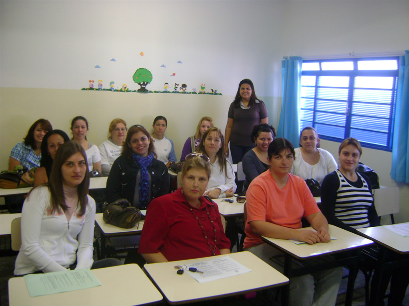

ESCOLA ESTRELINHA ORIENTA SEUS FUNCIONÁRIOS SOBRE A NOVA GRIPE: INFLUENZA A H1N1 (GRIPE SUÍNA)
No dia 14/08, a Escola promoveu uma manhã de conscientização sobre a "nova" gripe: Influenza H1N1, para o corpo docente e funcionários. Esta mobilização proporcionou a todos os envolvidos um maior conhecimento sobre o tema, abrangendo desde seu histórico no mundo, formas de contágio e principalmente medidas para prevenção.
Voltando-se para o ambiente escolar, orientou quanto às medidas preventivas a serem colocadas em práticas e tirou algumas dúvidas de nossa equipe escolar.
Salientou sobre a volta às aulas, deixando claro que o mais importante seria trabalhar em torno da informação, promovendo um conhecimento e conscientização aos alunos sobre esse novo vírus.
